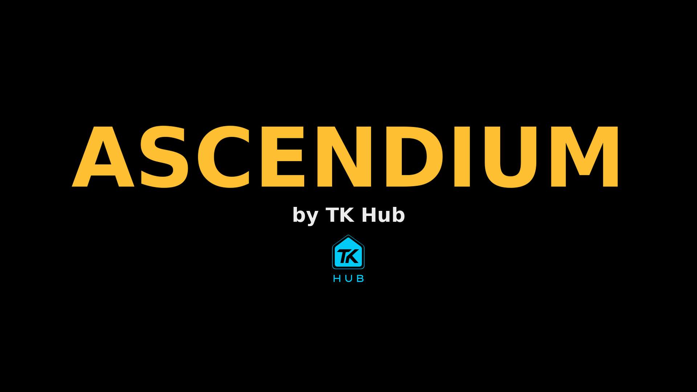
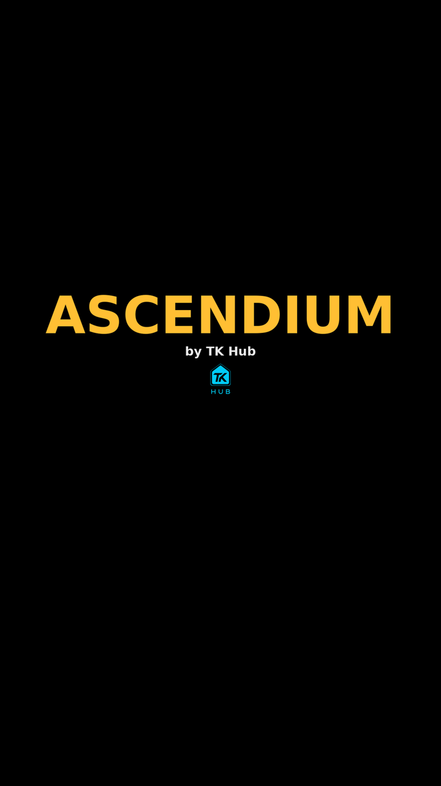

Rejected (14 Nov): Terrell rejected the Claude-made gold "ASCENDIUM" text logo shown here. This page stays only as a record of the layout; a new preview will use the delivered logo files.
ASCENDIUM launch screen preview (14 Nov 2026)
One screen, shown only while the game is loading (no added delay, D-026). Game logo large and centred; "by TK Hub" with the TK Hub logo master beneath. Preview only, not a live build.


- The gold "ASCENDIUM" is a text stand-in until the game's wordmark is chosen (open decision #11).
- The TK Hub logo is Terrell's vector master (
brand/tkhub-logo-master/tkhub-logo-2048-transparent.png), same look, sharp at any size. - Source: branch
claude/handoffof the ascendium-unreal repo (Scripts/branding/make_splash.py); not yet built or run in Unreal.